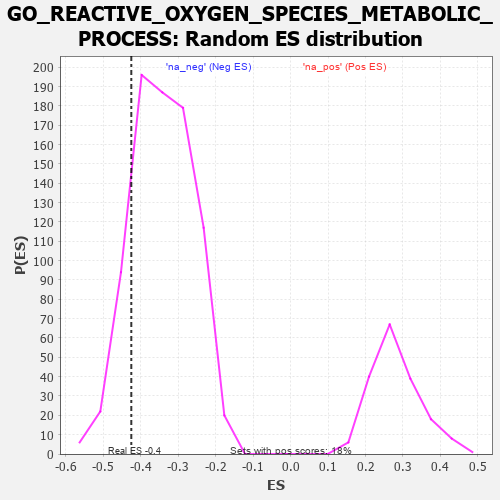

| | | Dataset | 7d |
| Phenotype | NoPhenotypeAvailable |
| Upregulated in class | na_neg |
| GeneSet | GO_REACTIVE_OXYGEN_SPECIES_METABOLIC_PROCESS |
| Enrichment Score (ES) | -0.42524785 |
| Normalized Enrichment Score (NES) | -1.2397046 |
| Nominal p-value | 0.14859927 |
| FDR q-value | 0.5601475 |
| FWER p-Value | 1.0 |
Table: GSEA Results Summary
 Fig 1: Enrichment plot: GO_REACTIVE_OXYGEN_SPECIES_METABOLIC_PROCESS
Fig 1: Enrichment plot: GO_REACTIVE_OXYGEN_SPECIES_METABOLIC_PROCESS
Profile of the Running ES Score & Positions of GeneSet Members on the Rank Ordered List
| PROBE | GENE SYMBOL | GENE_TITLE | RANK IN GENE LIST | RANK METRIC SCORE | RUNNING ES | CORE ENRICHMENT | | 1 | RAC2 | | | 60 | 2.442 | 0.0871 | No |
| 2 | AKT1 | | | 1040 | 0.476 | -0.0180 | No |
| 3 | PARL | | | 1290 | 0.432 | -0.0327 | No |
| 4 | CCS | | | 1302 | 0.427 | -0.0175 | No |
| 5 | BMP7 | | | 2107 | 0.290 | -0.1078 | No |
| 6 | SYK | | | 2186 | 0.278 | -0.1068 | No |
| 7 | TRAP1 | | | 2219 | 0.274 | -0.1003 | No |
| 8 | RORA | | | 2730 | 0.193 | -0.1571 | No |
| 9 | TIGAR | | | 3091 | 0.138 | -0.1972 | No |
| 10 | GPX1 | | | 3109 | 0.135 | -0.1941 | No |
| 11 | GCH1 | | | 3166 | 0.127 | -0.1962 | No |
| 12 | PRDX4 | | | 3214 | 0.120 | -0.1975 | No |
| 13 | SMAD3 | | | 3303 | 0.105 | -0.2046 | No |
| 14 | PRDX5 | | | 3547 | 0.068 | -0.2326 | No |
| 15 | ABCD1 | | | 3677 | 0.047 | -0.2471 | No |
| 16 | ATG5 | | | 4051 | -0.016 | -0.2935 | No |
| 17 | DDAH1 | | | 4056 | -0.016 | -0.2934 | No |
| 18 | MTOR | | | 4114 | -0.025 | -0.2996 | No |
| 19 | SESN1 | | | 4192 | -0.041 | -0.3078 | No |
| 20 | GBF1 | | | 4215 | -0.044 | -0.3089 | No |
| 21 | ROMO1 | | | 4320 | -0.063 | -0.3195 | No |
| 22 | ARF4 | | | 4383 | -0.073 | -0.3245 | No |
| 23 | LRRK2 | | | 4467 | -0.087 | -0.3316 | No |
| 24 | MPV17 | | | 4575 | -0.112 | -0.3408 | No |
| 25 | P2RX4 | | | 4813 | -0.161 | -0.3644 | No |
| 26 | CLU | | | 4889 | -0.174 | -0.3671 | No |
| 27 | KLF4 | | | 5005 | -0.198 | -0.3740 | No |
| 28 | HDAC6 | | | 5183 | -0.244 | -0.3868 | No |
| 29 | GRIN1 | | | 5381 | -0.291 | -0.4004 | No |
| 30 | PRDX3 | | | 5389 | -0.293 | -0.3899 | No |
| 31 | G6PD | | | 5638 | -0.358 | -0.4074 | No |
| 32 | TLR2 | | | 5761 | -0.395 | -0.4074 | Yes |
| 33 | SZT2 | | | 5882 | -0.429 | -0.4059 | Yes |
| 34 | RAC1 | | | 6036 | -0.484 | -0.4065 | Yes |
| 35 | KLF2 | | | 6182 | -0.532 | -0.4042 | Yes |
| 36 | INSR | | | 6204 | -0.538 | -0.3859 | Yes |
| 37 | RGN | | | 6233 | -0.547 | -0.3682 | Yes |
| 38 | PRDX6 | | | 6396 | -0.615 | -0.3648 | Yes |
| 39 | COQ7 | | | 6420 | -0.628 | -0.3434 | Yes |
| 40 | PLIN5 | | | 6524 | -0.672 | -0.3303 | Yes |
| 41 | RNF41 | | | 6588 | -0.703 | -0.3110 | Yes |
| 42 | EGFR | | | 6708 | -0.765 | -0.2963 | Yes |
| 43 | CTNS | | | 7044 | -0.965 | -0.3012 | Yes |
| 44 | PXDN | | | 7104 | -1.001 | -0.2699 | Yes |
| 45 | TSPO | | | 7194 | -1.065 | -0.2398 | Yes |
| 46 | WDR35 | | | 7357 | -1.225 | -0.2127 | Yes |
| 47 | SPR | | | 7407 | -1.273 | -0.1695 | Yes |
| 48 | VDAC1 | | | 7512 | -1.409 | -0.1280 | Yes |
| 49 | PKD2 | | | 7822 | -2.167 | -0.0830 | Yes |
| 50 | FYN | | | 7881 | -2.622 | 0.0114 | Yes |
Table: GSEA details [plain text format]

Fig 2: GO_REACTIVE_OXYGEN_SPECIES_METABOLIC_PROCESS: Random ES distribution
Gene set null distribution of ES for GO_REACTIVE_OXYGEN_SPECIES_METABOLIC_PROCESS